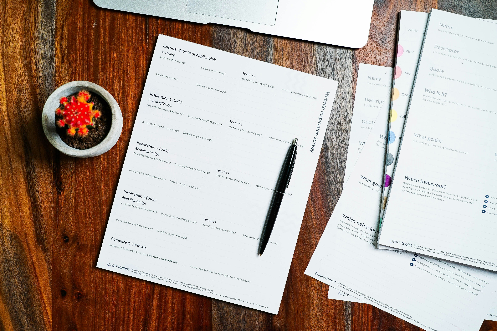

120K+
Resumes created
ResumeFlow turns your work history into a clean, recruiter-ready resume in minutes — no design skills, no formatting headaches.
Get Started FreeNo credit card needed
120K+
Resumes created
3.2x
Higher interview rate
4.8/5
Average rating
50+
Countries supported
Choose from designs built with hiring managers and applicant tracking systems in mind.
Get line-by-line phrasing suggestions based on your role, industry, and experience level.
Check your resume against applicant tracking systems before you hit send.
Download a polished PDF or share a live link — both update automatically as you edit.
Generate a cover letter that pulls directly from your resume, styled to match.
Keep every version and every application organized in one dashboard.
For first jobs and internships

For mid-career applications
For leadership and senior roles
★★★★★
ResumeFlow helped me rewrite ten years of experience into something recruiters actually read.
Anika Sharma
Product Manager
★★★★★
I had three interviews booked within a week of switching to a ResumeFlow template.
Marcus Lee
Data Analyst
★★★★☆
The ATS scan caught formatting issues I never would have noticed on my own.
Priya Nair
UX Designer
Yes. You can build and download your first resume without entering any payment details.
Every template is built to be ATS-friendly, and the built-in scan flags anything that could cause problems.
Yes. Your resume is saved to your account, so you can update and re-export it anytime.
Yes. You can generate a matching cover letter directly from your resume content.